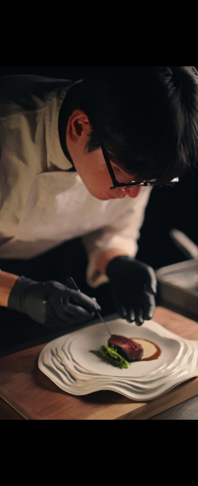

Head Chef
이용민
정통 이탈리안 조리법을 바탕으로 동양적인 향과 깊은 감칠맛을 더해 ASTRA의 아시안 퓨전 스타일을 이끕니다.
TALENTED CHEFS
ASTRA의 모든 요리는 각자의 감각과 경험을 지닌 셰프들의 손에서 완성됩니다.
좋은 재료에 창의적인 해석을 더해, 익숙하면서도 특별한 한 끼를 선보입니다.
한 접시에 담긴 우리 팀의 철학과 이야기를 만나보세요.
Head Chef

Sous Chef